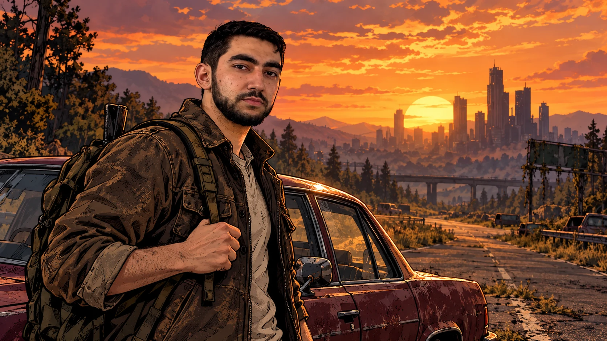
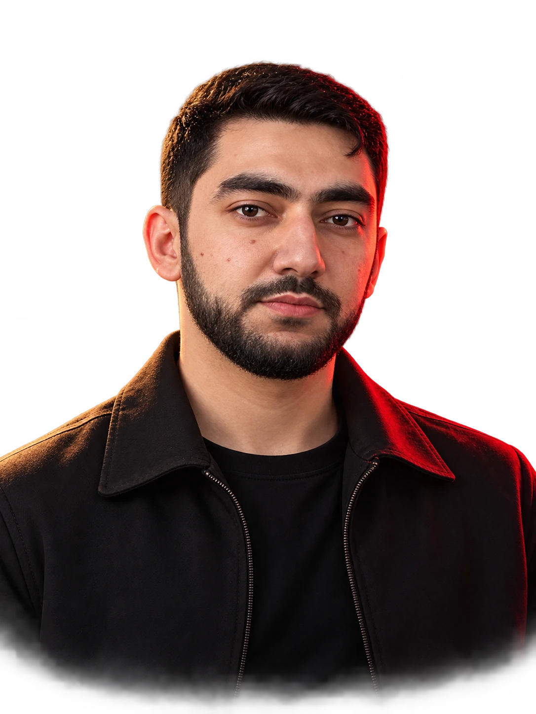
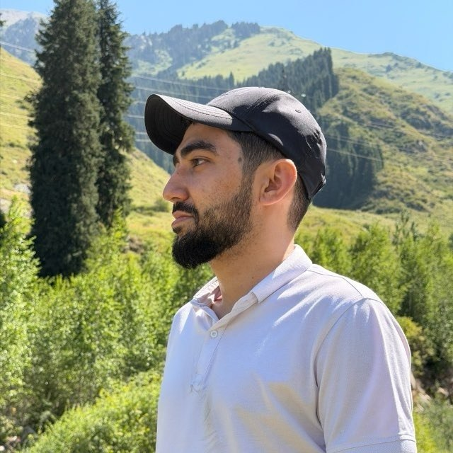
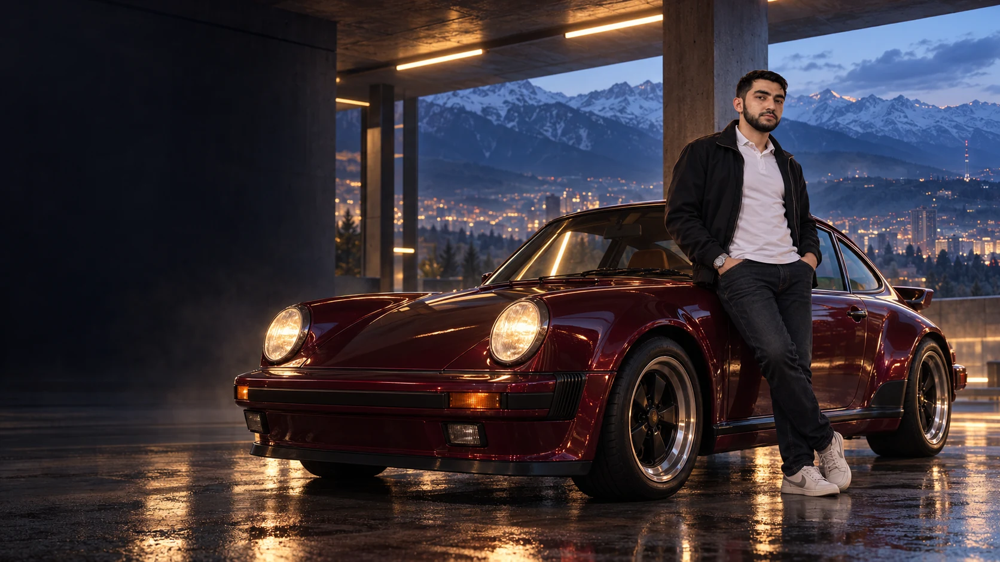
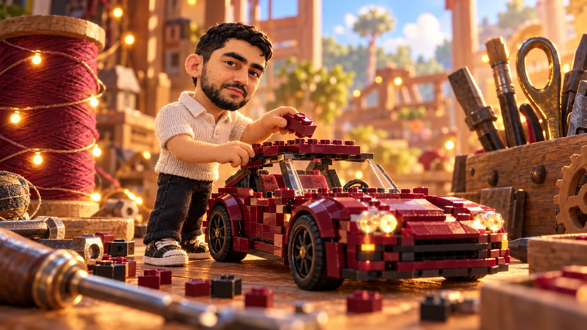
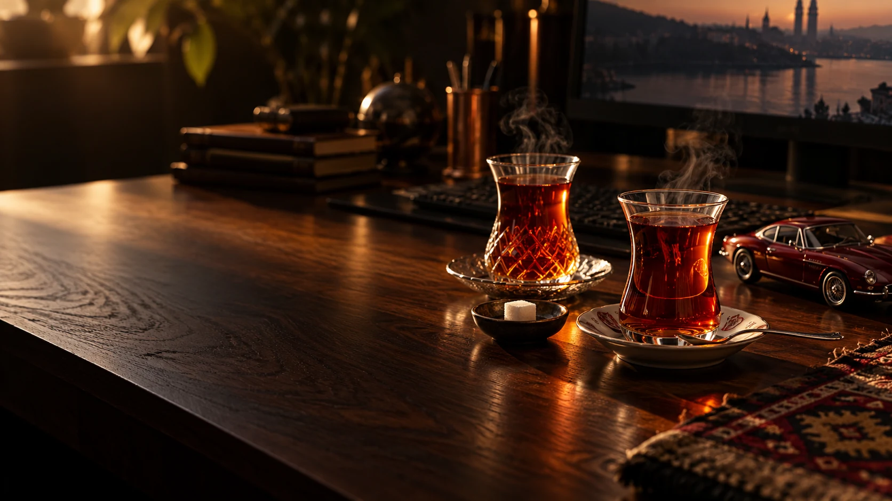

01 / STORY MODETHE WALKING DEAD · INSPIRED
ПРИНЯТЬ РЕШЕНИЕ.YOUR CHOICE.
Salam.
Знакомое лицо. Свой мир.43°14′ N / 76°53′ E
ALMATY, KAZAKHSTAN

Строю логику.
Люблю скорость.
Выбираю историю.
ЗАУР МАМЕДОВ
Java-разработчик из Алматы.
Спокойный с виду. С целой коллекцией
миров, идей и хороших поводов для суеты.

У каждого есть своя система.
Вот как устроена моя.
В рабочем мире — Java.
В личном — интерес ко всему,
что можно собрать по-своему.
// Не резюме. Немного обо мне.
public class Zaur {
public static void main(String[] args) {
String city = "Almaty";
String[] worlds = {
"Java", "Cars", "Games"
};
for (String world : worlds) {
System.out.println(world);
}
}
}~ Готов к запуску.

«Ща в машинах нет души
как будто»
ЛИСТАЙ — КАМЕРА ДВИЖЕТСЯ ВОКРУГ МАШИНЫ
Любимые вселенные.
Персональные обложки.
Один главный герой.


Персональные художественные сцены по мотивам игр.
Привет, брат.
Где бы ни жил — есть слова,
которые сразу делают всё своим.
И паузы, ради которых стоит
отложить даже хороший код.

ÇAY / A SMALL MOMENT OF HOME«Akıl yaşda deyil,
başdadır kardeşim»
Мудрость не в возрасте, а в голове.
К 25 годам — особенно кстати.
ПОРТФОЛИО БЫЛО БЫ НЕПОЛНЫМ
БЕЗ ТЕХ, КТО РЯДОМ.
От МУИТ
до следующей
хорошей истории.
ЭТА ГЛАВА — ТОЛЬКО ДЛЯ ТЕБЯ.
Новые дороги. Свои проекты.
Хорошие люди на пассажирском.
Продолжение уже началось.